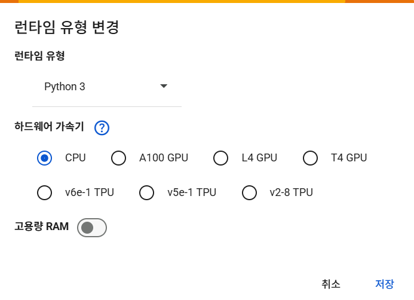
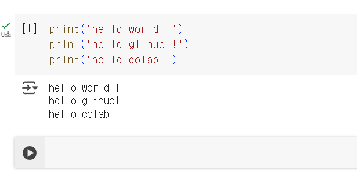
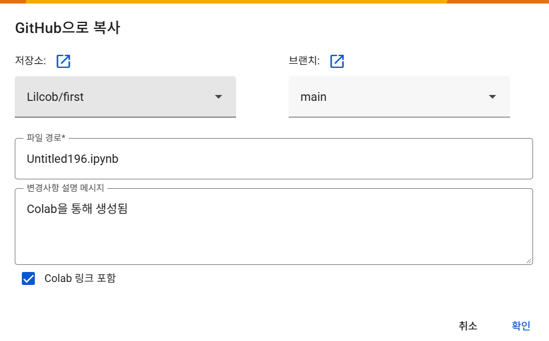
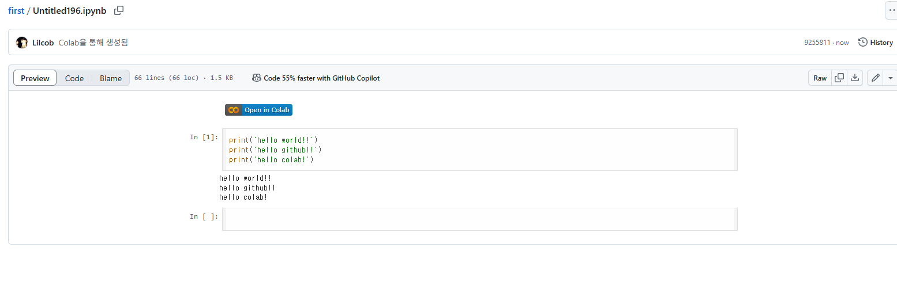

파이썬 문법
오늘의 일정
작업 환경
로컬과 클라우드 · Anaconda · Jupyter · Colab · 세션의 수명.
값과 변수
자료형 · 연산자 · 문자열 · 불변과 가변.
자료 구조
리스트 · 튜플 · 딕셔너리 · 집합.
흐름 제어
입력 · 형변환 · 비교와 논리 · 조건문 · 반복문 · 컴프리헨션.
함수
내장 함수 · def · 반환 · 인자의 가변성 · 메서드.
작업 환경
두 가지 실행 환경
Anaconda + Jupyter
내 컴퓨터에 설치하고, 내 컴퓨터에서 돌린다.
Google Colab
설치 없이 브라우저에서 열고, 구글 서버에서 돌린다.
.ipynb)을 연다. 먼저 로컬을 세우고, 그다음 Colab을 본다.Anaconda가 묶어 놓은 것
개인 사용은 무료다
설치와 확인
내려받기
anaconda.com에서 운영체제에 맞는 설치 파일을 받는다.
기본 옵션으로 설치
경로에 한글과 공백을 넣지 않는다. 나중에 패키지가 깨진다.
Anaconda Prompt 열기
Windows는 시작 메뉴에서, macOS는 터미널을 새로 연다.
conda --version
python --versionconda: command not found
일반 터미널이 아니라 Anaconda Prompt를 열어야 한다. macOS는 터미널을 닫았다 다시 연다.
가상 환경이 필요한 이유
환경 하나로 쓸 때
가상 환경을 쓸 때
(ai-basic)이 붙으면 그 환경이 켜진 상태다.# 이름과 파이썬 버전을 정해 만든다
conda create -n ai-basic python=3.11
# 켠다 — 이후 명령이 이 환경에 걸린다
conda activate ai-basic
# 필요한 것만 설치한다
conda install pandas scikit-learn matplotlib seaborn
# 끈다
conda deactivateconda로 먼저 찾고, 없을 때만 pip를 쓴다. 두 도구를 섞어 같은 패키지를 깔면 환경이 깨진다.ModuleNotFoundError가 나면 켜지 않은 것이다.Jupyter Lab 실행과 커널
conda activate ai-basic
cd C:\work\ai-basic # 작업할 폴더로 이동
jupyter labjupyter lab을 실행한 폴더가 작업 디렉터리다. 데이터 파일을 그 폴더에 둔다.Ctrl + C로 끝낸다.conda install ipykernel을 한 번 돌린다.브라우저 안에서 도는 남의 컴퓨터
구글 데이터센터
코드는 저쪽에서 돈다
화면만 브라우저에 있다. 파일을 읽는 경로도, 설치되는 패키지도 전부 Colab VM 쪽이다.
런타임이 끊긴 뒤 남는 것
/content는 세션 저장소다.from google.colab import drive
drive.mount('/content/drive')
# 세션 저장소 — 끊기면 사라진다
df.to_csv('/content/result.csv')
# 드라이브 — 계정에 남는다
df.to_csv('/content/drive/MyDrive/result.csv')기본값 CPU와 T4 런타임
런타임 → 런타임 유형 변경에서 하드웨어 가속기를 고른다.!nvidia-smi --query-gpu=name,memory.total --format=csv
실행 순서와 셀 번호

[1]은 실행 순서다. 위에서 아래 순서와 무관하다.| 단축키 | 동작 |
|---|---|
Ctrl + Enter | 실행하고 그 자리에 머문다 |
Shift + Enter | 실행하고 아래 셀로 넘어간다 |
Alt + Enter | 실행하고 아래에 새 셀을 만든다 |
Ctrl + M, M | 코드 셀 → 마크다운 셀 |
번호가 뒤엉킨 노트북
셀을 건너뛰며 실행하면 [7] [3] [12]처럼 남는다. 제출 전 런타임 초기화 후 전체 실행으로 검증한다.
노트북을 계정 밖에 남기는 두 길


.ipynb는 GitHub가 셀 단위로 렌더링한다. 링크 하나가 실행 결과까지 포함된 보고가 된다.고르는 기준
| 로컬 — Anaconda + Jupyter | 클라우드 — Colab | |
|---|---|---|
| 설치 | 아나콘다 한 번 | 없음 |
| 코드가 도는 곳 | 내 컴퓨터 | 구글 서버 |
| GPU | 내 장비에 있어야 쓴다 | T4를 무료로 배정 |
| 데이터 | 밖으로 나가지 않는다 | 구글 서버로 올라간다 |
| 세션 | 끄지 않으면 유지 | 끊기면 초기화 |
| 공유 | 파일을 전달한다 | 링크 하나 |
| 오프라인 | 된다 | 안 된다 |
.ipynb)은 두 환경에서 그대로 열린다. 고르는 기준은 문법이 아니라 데이터를 어디에 둘 수 있느냐다.값과 변수
값의 세 가지 종류
int · float
22 # 정수 int
7.25 # 실수 float
True # 참·거짓 bool숫자끼리 사칙연산이 된다.
str
'B00115'
"1234" # 숫자처럼 보여도 문자
'' # 빈 문자열따옴표 안은 전부 글자다.
list
[] # 빈 리스트
[22, 38, 26]
['S', 7.25] # 섞어도 된다여러 값을 순서대로 담는다.
"1234"와 1234는 다른 값이다
"1234" + "5"는 "12345"가 된다. CSV에서 읽은 숫자가 문자로 들어오는 사고가 여기서 시작된다.
+라도 피연산자의 자료형에 따라 덧셈이 되기도, 이어 붙이기가 되기도 한다.나눗셈이 세 종류인 이유
| 연산자 | 뜻 | 예 |
|---|---|---|
+ - * | 더하기 빼기 곱하기 | 7 * 2 → 14 |
/ | 나누기 — 결과는 항상 float | 6 / 2 → 3.0 |
// | 몫만 (버림) | 7 // 2 → 3 |
% | 나머지 | 7 % 2 → 1 |
** | 거듭제곱 | 2 ** 10 → 1024 |
print(6 / 2) # 나누어 떨어져도
print(7 // 2)
print(7 % 2)
# 짝수 판별에 % 를 쓴다
print(10 % 2 == 0)/는 나누어 떨어져도 float를 준다. 인덱스 계산에 쓰면 에러가 난다.//를 쓴다. %는 짝수 판별과 주기 처리의 기본 도구다.문자열의 인덱스와 슬라이스
batch = "B00115"
print(batch[0]) # 0부터 센다
print(batch[-1]) # 뒤에서 한 칸
print(batch[2:5]) # 2 이상 5 미만
print(len(batch))[2:5]는 2·3·4번이고 5번은 빠진다.값을 문자열에 끼워 넣기
batch = "B00115"
temp = 898.9
print(f"{batch} — {temp}°C")str()로 바꿔 이어 붙이지 않아도 된다.| 형식 | 결과 |
|---|---|
f"{n:,}" | 1,234,567 — 천 단위 쉼표 |
f"{x:.2f}" | 3.14 — 소수점 두 자리 |
f"{r:.1%}" | 38.4% — 퍼센트로 |
f"{n:>8}" | 여덟 칸에 오른쪽 정렬 |
문자열에서 자주 쓰는 메서드
| 메서드 | 하는 일 | 예 |
|---|---|---|
.strip() | 양끝 공백 제거 | " a " → "a" |
.lower() · .upper() | 대소문자 통일 | "Ab" → "ab" |
.replace(a, b) | 바꾸기 | "1,0" → "10" |
.split(sep) | 쪼개 리스트로 | "a,b" → ['a','b'] |
sep.join(lst) | 리스트를 이어 붙임 | ['a','b'] → "a,b" |
.startswith(s) | 시작 확인 | True / False |
.zfill(n) | 앞을 0으로 채움 | "7" → "007" |
raw = " A-2401 , 945℃ "
lot, temp = raw.strip().split(",")
print(lot.strip())
print(temp.strip().replace("℃", ""))
# 원본은 그대로다 — 새 문자열을 돌려준다
print(repr(raw))변수 이름 = 자료
temp = 898.9 # 숫자
batch = "B00115" # 문자열
fares = [7.25, 71.28, 7.92] # 리스트
# 자료형은 값이 정한다 — 선언하지 않는다
print(type(age), type(name))=는 같다는 뜻이 아니라 이 이름을 저 값에 붙인다는 뜻이다.# 뒤는 주석이다. 실행되지 않고, 사람이 읽는다._만 쓴다. list sum처럼 내장 함수 이름을 변수로 쓰면 그 함수를 못 쓴다.값이 바뀌는 자료형과 바뀌지 않는 자료형
불변 immutable
int · float · str · tuple
가변 mutable
list · dict · set
a = 10
b = a
b = b + 5 # 새 정수 15를 만든다
print(a, b)a = [1, 2]
b = a
b.append(3) # 그 리스트를 직접 고친다
print(a, b)b = a는 복사가 아니다. 이름 하나를 더 붙였을 뿐이다.대입과 복사의 차이
a = [1, 2]
b = a
print(id(a) == id(b)) # 같은 객체인가
c = a.copy() # 얕은 복사
c.append(99)
print(a, c)Pandas에서도 같은 함정
df2 = df로 넘긴 뒤 df2를 고치면 df도 바뀐다. 원본을 지키려면 df.copy()를 쓴다.
b = a는 복사가 아니라 이름을 하나 더 붙이는 것이다. 복사하려면 .copy()를 명시해야 한다.얕은 복사와 깊은 복사
rows = [{'설비호기': 'A', '소성온도': 898},
{'설비호기': 'E', '소성온도': 829}]
shallow = rows.copy() # 바깥 리스트만 새로
shallow[0]['소성온도'] = 99 # 안쪽 딕셔너리를 고친다
print(rows[0]['소성온도'])import copy
deep = copy.deepcopy(rows)
deep[0]['소성온도'] = 99
print(rows[0]['소성온도'])| 쓰는 법 | 바깥 구조 | 안쪽 객체 | 이름 |
|---|---|---|---|
b = a | 공유 | 공유 | 대입 — 복사가 아니다 |
a.copy() · a[:] | 새로 만든다 | 공유 | 얕은 복사 |
copy.deepcopy(a) | 새로 만든다 | 새로 만든다 | 깊은 복사 |
.copy()로 끝나고, 있으면 deepcopy가 필요하다.자료 구조
순서를 가진 값의 나열
ages = [22, 38, 26, 35]
print(ages[0], ages[-1])
print(ages[1:3])
print(len(ages))
ages.append(54)
print(ages)append remove sort는 뒤에서 표로 모아 본다.고쳐지지 않는 나열
shape = (891, 12)
print(shape[0])
rows, cols = shape # 한 번에 풀기
print(cols)
shape[0] = 100.shape는 늘 튜플로 나온다.중복이 없는 모음
ports = ['S', 'C', 'S', 'Q', 'S']
print(set(ports))
print(len(set(ports)))
print('C' in set(ports))s[0]으로 꺼낼 수 없다.in이 리스트보다 훨씬 빠르다.네 가지 자료 구조 비교
| 자료 구조 | 표기 | 순서 | 수정 | 쓰는 곳 |
|---|---|---|---|---|
| 리스트 list | [22, 38, 26] | 있음 | 가능 | 순서대로 쌓고 바꾸는 값 |
| 튜플 tuple | (891, 12) | 있음 | 불가 | 바뀌면 안 되는 좌표 · 텐서 shape |
| 딕셔너리 dict | {'age': 22} | 키로 접근 | 가능 | 이름표가 붙은 값 묶음 · 설정 |
| 집합 set | {'S', 'C', 'Q'} | 없음 | 가능 | 중복 제거 · 포함 여부 검사 |
이름으로 꺼내는 값
row = {'설비호기': 'A', '소성온도': 898}
print(row['소성온도'])
row['양품여부'] = 1 # 키 추가
print(row)row['cabin']으로 부르면 KeyError다. .get()은 대신 기본값을 준다.설정과 JSON의 모양
config = {
'lr': 0.001,
'hidden': [64, 32],
}
print(config['hidden'][0])JSON과 같은 모양
API 응답과 설정 파일이 이 구조다. { }는 딕셔너리, [ ]는 리스트로 읽으면 그대로 파이썬이 된다.
표 한 장의 파이썬 표현
| 설비호기 | temp | 양품여부 |
|---|---|---|
| A | 898 | 1 |
| C | 835 | 1 |
| E | 829 | 0 |
DataFrame이 정확히 이 구조를 감싼 것이다.rows = [
{'설비호기': 'A', '소성온도': 898, '양품여부': 1},
{'설비호기': 'C', '소성온도': 835, '양품여부': 1},
{'설비호기': 'E', '소성온도': 829, '양품여부': 0},
]
print(rows[1]['설비호기']) # 2행의 line
print(len(rows)) # 행 수rows[1]['name']은 "2번째 행의 name"이다.자료 구조에서 자주 쓰는 메서드
.append(x) | 뒤에 하나 추가 |
.extend(xs) | 여러 개 이어 붙임 |
.insert(i, x) | i 자리에 끼움 |
.remove(x) | 그 값을 지움 |
.pop(i) | 꺼내면서 지움 |
.sort() | 제자리 정렬 — 원본이 바뀐다 |
.count(x) · .index(x) | 개수 · 위치 |
.keys() · .values() | 키 목록 · 값 목록 |
.items() | 키와 값을 쌍으로 |
.get(k, 기본값) | 없어도 에러가 안 난다 |
.update(d) | 여러 개를 한 번에 |
.add(x) | 집합에 하나 추가 |
a | b · a & b | 합집합 · 교집합 |
a - b | 차집합 — 빠진 항목 찾기 |
.sort() 는 원본을 고치고 아무것도 돌려주지 않는다. x = lst.sort() 로 받으면 None 이다.흐름 제어
input()이 돌려주는 문자열
var = input("온도: ")
print(var)
print(type(var))n = input("인원: ") # 3 을 입력
print(n * 2)6이 아니라 33이 나온다
"3" * 2는 문자열을 두 번 이어 붙인다. 계산하려면 먼저 숫자로 바꿔야 한다.
자료형을 바꿔 끼우는 함수들
정수로
raw = "22"
print(int(raw) + 1)
print(type(int(raw)))실수로
raw = "7.25"
print(float(raw) * 2)
print(int("7.25"))문자열로
n = 1412
print("배치 " + str(n) + "건")
print(f"배치 {n}건")int("7.25")는 실패한다. 소수점 문자열은 int(float(raw))처럼 두 단계로 간다.n = int(input("인원: "))처럼 한 줄로 묶는다.str(), 계산할 때는 int()·float(). 방향이 반대다.숫자처럼 보이지만 숫자가 아닌 것들
int("1,234") # 천 단위 쉼표
int("12.0") # 소수점
int(" 12 ") # 공백은 괜찮다
int("N/A") # 결측 표기raw = "1,234"
print(int(raw.replace(",", "")))
raw = "12.0"
print(int(float(raw))) # 두 단계pd.to_numeric()이 있다.참인지 거짓인지를 내놓는 식
| 연산자 | 뜻 | 예 | 결과 |
|---|---|---|---|
== | 같다 | 3 == 3 | True |
!= | 다르다 | 3 != 3 | False |
> < | 크다 · 작다 | 38 > 22 | True |
>= <= | 크거나 같다 | 3 >= 3 | True |
=와 ==
=는 값을 붙이고, ==는 같은지 묻는다. 조건문에 =를 쓰면 문법 오류가 난다.
age = 22
print(age < 18)
print(type(age < 18))
# 문자열도 비교된다 — 대소문자 구분
print("A" == "a")True/False 두 값뿐이고, 이것이 조건문과 데이터 필터링의 입력이 된다.조건 여러 개의 결합
둘 다 참이어야 참
| True and True | True |
| True and False | False |
| False and False | False |
하나만 참이어도 참
| True or True | True |
| True or False | True |
| False or False | False |
참·거짓을 뒤집는다
| not True | False |
| not False | True |
| not (3 > 5) | True |
age, pclass = 22, 3
print(age < 18 and pclass == 1) # 둘 다 맞아야
print(age < 18 or pclass == 3) # 하나만 맞아도
print(18 <= age < 65) # 범위는 이어 쓴다and는 조건을 좁히고, or는 넓힌다. 둘을 바꿔 쓰면 결과 건수가 통째로 달라진다.True가 아닌 참
| 값 | 판정 |
|---|---|
0 · 0.0 | 거짓 |
"" 빈 문자열 | 거짓 |
[] {} 빈 리스트·딕셔너리 | 거짓 |
None | 거짓 |
| 그 밖의 모든 값 | 참 |
rows = []
# 길이를 세지 않아도 된다
if rows:
print("데이터 있음")
else:
print("비어 있음")값 0이 걸러진다
if 성형압력:는 압력이 0일 때 거짓이 된다. 값의 유무를 볼 때는 if 성형압력 is not None:을 쓴다.
조건에 따라 갈라지는 실행
age = 12
if age < 18:
print("미성년")
else:
print("성인")else는 생략할 수 있다. 조건이 거짓이면 그냥 지나간다.셋 이상의 갈래
age = 35
if age < 13:
group = "어린이"
elif age < 20:
group = "청소년"
else:
group = "성인"
print(group)elif는 몇 개든 이어 붙인다. else는 맨 끝에 하나만 온다.age < 100을 첫 줄에 쓰면 전부 거기서 끝난다.괄호 대신 공백으로 묶는 블록
조건 안에 있는 줄
들여쓰기를 하나 옮기면
if age < 18:
print("미성년")같은 코드를 다시 쓰지 않는 법
손으로 쓴다면
묶으면
같은 명령이 반복되는 코드를 한 덩어리로 표현한다.
꺼낼 것이 정해진 반복
ages = [22, 38, 26]
for a in ages:
print("온도:", a)a는 반복할 때마다 다음 값으로 바뀌는 이름이다. 아무 이름이나 써도 된다.for i in range(3):for는 꺼낼 대상이 있을 때 쓴다. 몇 번 도는지는 대상이 정한다.한 번에 값 두 개 꺼내기
for i, a in enumerate(ages, start=1):
print(i, a)row = {'소성온도': 22, 'fare': 7.25}
for k, v in row.items():
print(k, v)start=1을 빼면 0부터 센다..items()를 붙인다.range() 로 횟수 정하기
| 쓰는 법 | 나오는 값 |
|---|---|
range(5) | 0 1 2 3 4 |
range(1, 5) | 1 2 3 4 |
range(0, 10, 2) | 0 2 4 6 8 |
range(5, 0, -1) | 5 4 3 2 1 |
끝 값은 포함되지 않는다
range(1, 5)에 5는 없다. 1부터 5까지 돌려면 range(1, 6)이다.
for epoch in range(1, 4):
print(f"epoch {epoch} 학습 중")range(epochs)를 돌며 오차를 줄인다.for x in 리스트, 횟수만 필요하면 for i in range(n)다.끝을 조건이 정하는 반복
count = 1
while count <= 3:
print("시도", count)
count = count + 1 # 이 줄이 핵심count = 1
while count <= 3:
print("시도", count)
# count 를 안 늘리면?Colab에서 멈추는 법
셀 왼쪽의 정지 버튼을 누른다. 그래도 안 되면 런타임 → 런타임 다시 시작.
while을 쓸 때는 조건을 거짓으로 만드는 줄이 몸통 안에 있는지 먼저 확인한다.반복 도중의 탈출과 건너뜀
ages = [22, 38, 4, 35]
for a in ages:
if a < 18:
print("미성년 발견:", a)
break
print("확인:", a)for a in ages:
if a < 18:
continue # 아래를 건너뛴다
print("집계:", a)break는 찾으면 그만, continue는 거르고 계속이다.return을 쓴다.한 줄로 접은 반복
for 문으로
빈 리스트를 만들고 하나씩 append한다.
컴프리헨션으로
같은 일을 한 줄로 쓴다. 데이터 전처리 코드에서 늘 보인다.
ages = [22, 38, 4, 35]
# [ 꺼낸 값을 어떻게 for 무엇에서 ]
months = [a * 12 for a in ages]
print(months)adults = [a for a in ages if a >= 18]
print(adults)
labels = ["성인" if a >= 18 else "미성년"
for a in ages]
print(labels)괄호가 정하는 결과 자료형
| 표기 | 결과 | 예 | 쓰는 곳 |
|---|---|---|---|
[ x for … ] | list | [n.upper() for n in names] | 값을 하나씩 바꿔 담을 때 |
{ k: v for … } | dict | {n: a for n, a in zip(…)} | 범주 → 숫자 대응표 |
{ x for … } | set | {a // 10 for a in ages} | 중복을 없앨 때 |
( x for … ) | generator | sum(a * 12 for a in ages) | 담지 않고 바로 집계할 때 |
{}만 쓰면 빈 딕셔너리다. 빈 집합은 set()으로 만든다.sum() 안에서는 대괄호를 빼는 편이 메모리를 덜 쓴다.lines = ['A', 'C', 'E']
temps = [898, 835, 829]
print([L.lower() for L in lines])
print({L: t for L, t in zip(lines, temps)})
print({t // 10 * 10 for t in temps})
print(sum(t for t in temps))함수
입력 · 처리 · 출력
내장 함수
| 함수 | 하는 일 |
|---|---|
print() | 화면에 출력 |
len() | 길이·개수 |
max() min() | 최댓값 · 최솟값 |
sum() | 합계 |
sorted() | 정렬한 새 리스트 |
type() | 자료형 확인 |
ages = [22, 38, 26, 35]
print(max(ages), min(ages))
print(sum(ages))
print(sum(ages) / len(ages)) # 평균sum()과 len()을 조합하거나 Pandas를 쓴다.def · 인자 · 들여쓰기 · return
def age_group(age, adult=18):
if age < adult:
return "미성년"
return "성인"
print(age_group(12))
print(age_group(12, adult=10))정의
def 이름(...): — 콜론으로 끝낸다.
입력
괄호 안이 인자다. adult=18처럼 기본값을 줄 수 있다.
몸통
들여쓴 줄까지가 함수다. 들여쓰기가 풀리면 함수 밖이다.
반환
return이 값을 돌려주고 함수를 즉시 끝낸다.
출력하는 함수와 돌려주는 함수
print만 하는 함수
화면에 보이지만 값을 쓸 수 없다.
return 하는 함수
결과를 변수에 담고 다음 계산에 넘긴다.
return이 없는 함수는 None을 돌려준다. 그 값을 계산에 쓰면 에러가 난다.apply) 반드시 return이 있어야 한다.print는 사람에게 보여 주고, return은 다음 코드에 넘긴다. 둘을 헷갈리면 결과가 None으로 흐른다.함수 안에서만 사는 이름
ADULT = 18 # 전역
def gap(age):
diff = age - ADULT # 지역
return diff
print(gap(22))
print(diff)바깥값을 바꾸려면
global을 쓰는 대신 인자로 받고 return으로 돌려준다. 어디서 값이 바뀌는지 코드에 드러난다.
함수 인자와 가변성
def add_one(n):
n = n + 1 # 새 정수를 만든다
x = 10
add_one(x)
print(x)def append_one(lst):
lst.append(1) # 그 객체를 고친다
nums = [0]
append_one(nums)
print(nums)func(nums.copy())로 넘기거나, 함수 안에서 새 리스트를 만들어 return한다.자료형에 속한 함수
함수 — 독립적으로 호출
대상을 괄호 안에 넣는다.
메서드 — 값에 붙어서 호출
대상 뒤에 점을 찍고 부른다.
append가 있고 문자열에는 없다.df.head().sort_values(...)처럼 점으로 이어 붙인다."abc".append()처럼 없는 메서드를 부르면 AttributeError가 난다. 자료형을 잘못 안 것이다.AttributeError가 뜨면 문법이 아니라 다루는 값의 자료형을 의심한다.손에 남는 것
Colab은 원격 실행 환경
세션이 끊기면 변수와 파일이 사라진다. 남길 것은 드라이브나 GitHub로 뺀다.
불변과 가변
int·str·tuple은 고쳐지지 않고 list·dict·set은 고쳐진다. b = a와 함수 인자 전달에서 결과가 갈린다.
표는 딕셔너리의 리스트다
한 행이 딕셔너리, 표 전체가 리스트. Pandas의 DataFrame이 이 구조를 감싼 것이다.
들여쓰기가 블록이다
조건문·반복문·함수 모두 콜론과 들여쓰기로 범위를 정한다. 어긋나도 에러가 안 날 때가 있다.
return이 없으면 None이 흐른다
print는 사람에게, return은 다음 코드에. apply에서 바로 쓰인다.